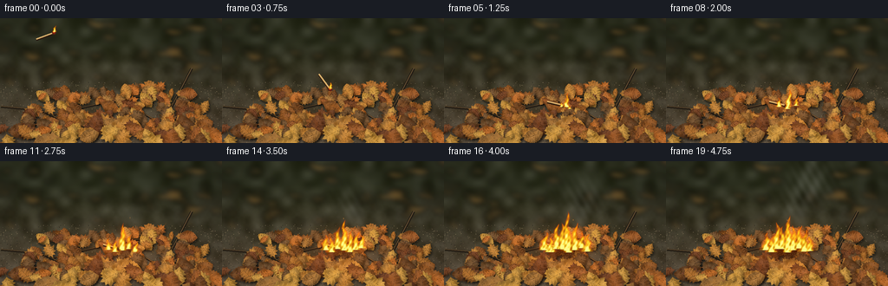
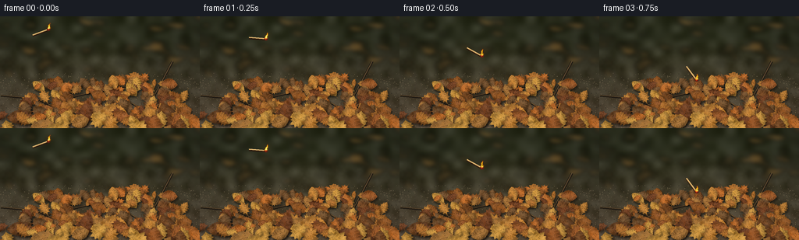

CODING AGENTS AS PIXEL WORLD MODELS
traex/GPT-6.1-Sol · phygen_142
点击播放 · 原生 RGB 像素
逐轮保存的候选
回放视频、检查图与代码变化。
每份候选均可单独播放。实际图片检查记录在下方工具轨迹中。
候选 01播放与检查图
点击播放 · 原生 RGB 像素


展开代码变化
--- 上一保存版本
+++ 本次保存版本
@@ -0,0 +1,274 @@
+from pathlib import Path
+import math
+import numpy as np
+from PIL import Image, ImageDraw, ImageFilter
+import artifact_io
+
+# A deterministic, entirely procedural macro shot of dry leaf litter catching fire.
+ROOT = Path(__file__).resolve().parent
+W, H, S = 256, 144, 3
+SW, SH = W*S, H*S
+rng = np.random.default_rng(142)
+Y, X = np.mgrid[0:SH, 0:SW].astype(np.float32)
+X /= S; Y /= S
+
+def noise_grid(nx, ny, seed):
+ a = np.random.default_rng(seed).random((ny,nx)).astype(np.float32)
+ im = Image.fromarray(a, mode='F').resize((SW,SH), Image.Resampling.BICUBIC)
+ return np.asarray(im)
+
+n1 = noise_grid(22,14,52)
+n2 = noise_grid(85,48,54)
+n3 = noise_grid(220,128,57)
+fine = np.random.default_rng(83).normal(0,1,(SH,SW)).astype(np.float32)
+
+def background():
+ # An out-of-focus, earthy woodland floor, rather than a studio backdrop.
+ depth = np.clip((Y-27)/110,0,1)
+ base = np.zeros((SH,SW,3),np.float32)
+ for c,(near,far) in enumerate(zip([92,78,60],[45,48,31])):
+ base[:,:,c] = far+(near-far)*depth + (n1-.5)*27+(n2-.5)*12*depth+fine*2*depth
+ shade = 1-.2*((X-116)/180)**2
+ base *= shade[:,:,None]
+ im = Image.fromarray(np.uint8(np.clip(base,0,255)))
+ # Distant litter gives the same physical environment through depth of field.
+ distant = Image.new('RGBA',(SW,SH))
+ d = ImageDraw.Draw(distant)
+ for i in range(95):
+ x=rng.uniform(-20,275)*S; y=rng.uniform(-10,82)*S
+ sz=rng.uniform(2,13)*S
+ col=rng.choice([[83,64,35],[67,60,34],[106,77,39],[55,49,30],[135,101,51]])
+ pts=[(x-sz,y),(x-.3*sz,y-.3*sz),(x+.8*sz,y-.12*sz),(x+sz,y+.2*sz),(x,y+.45*sz)]
+ d.polygon(pts,fill=tuple(int(v) for v in col)+(180,))
+ distant=distant.filter(ImageFilter.GaussianBlur(3.3*S))
+ im=Image.alpha_composite(im.convert('RGBA'),distant)
+ d=ImageDraw.Draw(im)
+ for i in range(1650):
+ x=rng.uniform(0,256); y=rng.uniform(73,144)
+ sz=rng.uniform(.10,.52)*S
+ color=tuple(int(v) for v in rng.choice([[65,55,44],[114,99,76],[43,42,33],[128,114,86]]))
+ d.ellipse((x*S,y*S,x*S+sz*1.5,y*S+sz),fill=color)
+ # Woody twigs with a subdued sunlit edge.
+ for pts in [[(22,133),(63,111),(109,100),(179,87)],[(204,130),(179,118),(155,104)],[(194,109),(209,81),(221,58)],[(1,102),(46,106),(70,117)]]:
+ p=[(a*S,b*S) for a,b in pts]
+ d.line(p,fill=(37,30,22),width=3*S)
+ d.line([(a*S,b*S-.6*S) for a,b in pts],fill=(108,85,54),width=S)
+ return im.convert('RGB')
+
+palette = [(137,82,37),(165,105,45),(182,123,54),(116,73,39),(148,87,43),(192,141,62),(111,78,46),(156,108,54),(177,102,43),(112,65,37)]
+
+def leaf(im,cx,cy,length,angle,typ,col,seed):
+ rr=np.random.default_rng(seed)
+ ca,sa=math.cos(angle),math.sin(angle)
+ width = length*rr.uniform(.31,.44)
+ def world(u,v):
+ return (cx+u*length*ca-v*width*sa,cy+u*length*sa+v*width*ca)
+ if typ=='oak':
+ us=np.array([-.48,-.35,-.30,-.21,-.15,-.07,.02,.10,.18,.27,.33,.40,.52])
+ vs=np.array([.03,.38,.72,.62,.92,.69,1.,.72,.89,.60,.63,.31,0.])
+ vs*=rr.uniform(.81,1.07,len(vs))
+ coords=list(zip(us,-vs))+list(zip(us[-2::-1],vs[-2::-1]*rr.uniform(.85,1.03)))
+ elif typ=='maple':
+ coords=[(-.5,0),(-.33,-.22),(-.36,-.57),(-.19,-.48),(-.13,-1.),(.03,-.69),(.24,-1.04),(.26,-.53),(.40,-.58),(.37,-.22),(.56,0),(.35,.26),(.42,.52),(.23,.48),(.19,1.),(-.03,.7),(-.16,.95),(-.22,.45),(-.37,.57),(-.32,.20)]
+ else:
+ coords=[]
+ for side in [-1,1]:
+ us=np.linspace(-.5,.54,21)
+ if side==1: us=us[::-1]
+ for j,u in enumerate(us):
+ v=side*(max(0,math.sin((u+.5)/1.04*math.pi))**.75)*(.79+(.10 if j%2 else -.03))
+ coords.append((u,v))
+ points=[world(u,v) for u,v in coords]
+ bx=max(0,int(min(p[0] for p in points)*S)-7); by=max(0,int(min(p[1] for p in points)*S)-7)
+ ex=min(SW,int(max(p[0] for p in points)*S)+8); ey=min(SH,int(max(p[1] for p in points)*S)+8)
+ if ex<=bx or ey<=by:return
+ pw,ph=ex-bx,ey-by
+ mask=Image.new('L',(pw,ph)); md=ImageDraw.Draw(mask)
+ pp=[(x*S-bx,y*S-by) for x,y in points]
+ md.polygon(pp,fill=255)
+ # Layered contact shadows establish a tangled pile with many curled edges.
+ shadow=Image.new('RGBA',(pw+12,ph+12))
+ sm=Image.new('L',shadow.size); sm.paste(mask,(4,6)); sm=sm.filter(ImageFilter.GaussianBlur(1.3*S))
+ sm=np.uint8(np.asarray(sm)*.46)
+ shadow.putalpha(Image.fromarray(sm))
+ im.paste(shadow,(bx,by),shadow)
+ xx=X[by:ey,bx:ex]-cx; yy=Y[by:ey,bx:ex]-cy
+ u=(xx*ca+yy*sa)/length; v=(-xx*sa+yy*ca)/width
+ grain=noise_grid(34,24,seed)[by:ey,bx:ex]-.5
+ crease=(np.sin(u*24+v*5+seed)*np.sin(v*7+u*4))
+ fold=1-.20*np.abs(v)+.12*np.cos(v*3.8+u*5)+.055*crease
+ fold+=.12*(-v)*math.cos(angle)+.07*u
+ tex=(n2[by:ey,bx:ex]-.5)*20 + grain*14 + fine[by:ey,bx:ex]*2.4
+ rgb=np.stack([np.clip(c*fold+tex,0,255) for c in col],axis=-1).astype('uint8')
+ patch=Image.fromarray(rgb).convert('RGBA'); patch.putalpha(mask)
+ pd=ImageDraw.Draw(patch)
+ def p(u,v):
+ x,y=world(u,v); return (x*S-bx,y*S-by)
+ vein=tuple(int(min(255,c*1.15+5)) for c in col)+(170,)
+ dark=tuple(int(c*.63) for c in col)+(160,)
+ pd.line([p(-.47,.014),p(-.2,.014),p(.07,.02),p(.51,0)],fill=dark,width=max(1,int(.43*S)))
+ pd.line([p(-.48,0),p(-.2,-.008),p(.07,0),p(.51,0)],fill=vein,width=max(1,int(.30*S)))
+ for k,u0 in enumerate([-.32,-.18,-.04,.10,.24,.35]):
+ wid=math.sin((u0+.5)/1.05*math.pi)*.75
+ for side in [-1,1]:
+ q=[p(u0,0),p(u0+.075,side*wid*.42),p(u0+.10,side*wid*.84)]
+ pd.line(q,fill=vein,width=1)
+ for sub in [.4,.65]:
+ pd.line([p(u0+.10*sub,side*wid*sub),p(u0+.16*sub,side*wid*(sub+.15))],fill=vein,width=1)
+ # Tiny tears and dark browned speckles in the dried leaf surface.
+ for k in range(max(3,int(length))):
+ uu=rr.uniform(-.36,.4); vv=rr.uniform(-.7,.7)
+ px,py=p(uu,vv)
+ if 0<=px<pw and 0<=py<ph and mask.getpixel((int(px),int(py)))>0:
+ r=rr.uniform(.08,.31)*S
+ pd.ellipse((px-r,py-r,px+r,py+r),fill=tuple(int(c*.65) for c in col)+(200,))
+ # Reapply silhouette after veins and flecks.
+ patch.putalpha(mask)
+ im.paste(patch,(bx,by),patch)
+ d=ImageDraw.Draw(im)
+ st=world(-.49,0); en=world(-.68,.035)
+ d.line([(st[0]*S,st[1]*S),(en[0]*S,en[1]*S)],fill=tuple(int(c*.65) for c in col),width=max(1,int(.55*S)))
+
+base=background()
+# The mound rises in the middle; farther leaves are smaller and more tightly overlapped.
+leaves=[]
+for i in range(205):
+ x=rng.uniform(28,238)
+ center=1-((x-137)/118)**2
+ y=rng.uniform(96-20*max(0,center),141-5*max(0,center))
+ length=rng.uniform(13,27)*(0.7+.0045*(y-74))
+ if i<25: x=rng.uniform(-8,269); y=rng.uniform(120,155); length=rng.uniform(20,36)
+ leaves.append((y,x,length,rng.uniform(-math.pi,math.pi),rng.choice(['oak','maple','oval'],p=[.49,.26,.25]),palette[rng.integers(0,len(palette))],420+i))
+for y,x,l,a,typ,col,seed in sorted(leaves):
+ leaf(base,x,y,l,a,typ,col,seed)
+base_arr=np.asarray(base).astype(np.float32)
+
+# Analytic turbulent flame fields: buoyant tongues with hot cores and broken edges.
+def fire_field(t,sources):
+ field=np.zeros((SH,SW),np.float32)
+ heat=np.zeros_like(field)
+ for j,(bx,by,height,width) in enumerate(sources):
+ h=height*(.90+.11*math.sin(t*15+j*2.7)+.055*math.sin(t*29+j))
+ z=(by-Y)/h
+ zz=np.clip(z,0,1)
+ bend=(1.5*math.sin(t*8+j)+1.5)*zz**1.7
+ center=bx+bend+width*.24*np.sin(zz*9-t*13+j*2.3)*zz
+ ww=width*np.maximum(0,1-zz)**.67*(.90+.14*np.sin(zz*15-t*16+j))+.18
+ q=np.exp(-1.7*((X-center)/ww)**2)
+ q *= np.maximum(0,1-zz)**.25
+ turb=(np.sin(X*.82+Y*.36+t*14)+np.sin(X*.47-Y*.78+t*21)+np.sin(X*1.53+Y*.93-t*28))/3
+ energy=q*(.93+.33*turb)
+ energy*=((z>=-.025)&(z<1))
+ field=np.maximum(field,energy)
+ heat=np.maximum(heat,energy*(1-.53*zz))
+ return field,heat
+
+def add_fire(arr,t,sources):
+ if not sources:return arr
+ f,heat=fire_field(t,sources)
+ alpha=np.clip((f-.14)*1.65,0,1)
+ # Separate soft radiance from the visible, highly nonuniform combustion front.
+ glow=Image.fromarray(np.uint8(np.clip(f*125,0,255))).filter(ImageFilter.GaussianBlur(3*S))
+ gl=np.asarray(glow,dtype=np.float32)/255
+ arr += gl[:,:,None]*np.array([112,39,2],np.float32)
+ a=np.clip((heat-.18)/.62,0,1)
+ col=np.empty_like(arr)
+ col[:,:,0]=255
+ col[:,:,1]=60+192*a**.64
+ col[:,:,2]=4+132*a**3
+ # Fire luminous but neither opaque white nor flat neon.
+ arr=arr*(1-alpha[:,:,None])+col*alpha[:,:,None]
+ return arr
+
+def smoke(arr,t,strength):
+ if strength<=0:return arr
+ dens=np.zeros((SH,SW),np.float32)
+ for j in range(20):
+ age=(t-.95)-j*.15
+ if age<0:continue
+ x=140+9*math.sin(age*1.9+j*.55)+6*age
+ y=99-age*23
+ rx=3+age*4.4; ry=3+age*3.4
+ g=np.exp(-.5*(((X-x)/rx)**2+((Y-y)/ry)**2))
+ dens+=g*.018*(.6+age*.3)
+ rip=(.56+.24*np.sin(X*.35+Y*.17+t*2.5)+.2*np.sin(X*.64-Y*.38+t*4))
+ dens*=rip*strength
+ dens=np.clip(dens,0,.23)
+ gray=np.stack([np.full_like(X,155),np.full_like(X,157),np.full_like(X,150)],axis=-1)
+ return arr*(1-dens[:,:,None])+gray*dens[:,:,None]
+
+frames=[]
+for frame in range(20):
+ t=frame/4
+ arr=base_arr.copy()
+ # The match follows a downward ballistic throw, then lies still among the leaves.
+ landing=.91
+ if t<landing:
+ q=t/landing
+ cx=53+80*q; cy=20+12*q+65*q*q
+ angle=-.35+1.55*q
+ headx=cx+10*math.cos(angle); heady=cy+10*math.sin(angle)
+ tailx=cx-12*math.cos(angle); taily=cy-12*math.sin(angle)
+ # A faint grounded shadow only emerges as the match gets close.
+ sd=np.exp(-((X-cx)/12)**2-((Y-110)/2.8)**2)*q*.15
+ arr*=1-sd[:,:,None]
+ else:
+ headx,heady=140,101
+ tailx,taily=119,96
+ age=max(0,t-1.18)
+ burn=np.clip(age/3.1,0,1)
+ radx=4+25*burn; rady=2.2+11*burn
+ dist=((X-140)/radx)**2+((Y-103)/rady)**2
+ charring=np.exp(-dist*1.8)*burn*.86
+ # Charred surface remains legible with glowing fissures beneath the flames.
+ arr*=1-charring[:,:,None]
+ if age>0:
+ cracks=(np.sin(X*2.1+Y*.7)*np.sin(Y*1.85-X*.6)>.77)
+ emb=np.exp(-dist*2)*cracks*burn
+ arr+=emb[:,:,None]*np.array([93,21,1])
+ illumination=np.exp(-(((X-139)/40)**2+((Y-104)/22)**2))*min(age*.25,.50)
+ arr+=illumination[:,:,None]*np.array([72,25,0])
+ im=Image.fromarray(np.uint8(np.clip(arr,0,255)))
+ d=ImageDraw.Draw(im)
+ # Matchstick: wooden shaft, highlighted edge and dark red rounded phosphorus head.
+ d.line([(tailx*S,(taily+.8)*S),(headx*S,(heady+.8)*S)],fill=(44,27,15),width=3*S)
+ d.line([(tailx*S,taily*S),(headx*S,heady*S)],fill=(211,169,102),width=int(1.8*S))
+ d.line([(tailx*S,(taily-.38)*S),(headx*S,(heady-.38)*S)],fill=(247,210,142),width=1)
+ if t>landing:
+ f=min(1,(t-landing)/2)
+ d.line([((headx-6*f)*S,(heady-1.4*f)*S),(headx*S,heady*S)],fill=(45,29,19),width=2*S)
+ d.ellipse(((headx-2.15)*S,(heady-2.15)*S,(headx+2.15)*S,(heady+2.15)*S),fill=(94,32,21))
+ d.ellipse(((headx-1.3)*S,(heady-1.7)*S,(headx+.8)*S,(heady+.5)*S),fill=(219,71,19))
+ arr=np.asarray(im).astype(np.float32)
+ # Airborne flame stays buoyant above the head, rather than rotating with the stick.
+ sources=[(headx,heady-1,8.5+1.5*math.sin(t*12),2.7)]
+ if age>0:
+ growth=min(1,age/2.9)
+ count=2+int(7*growth)
+ for j in range(count):
+ frac=(j/(count-1)-.5)
+ bx=140+frac*(8+42*growth)
+ by=102+2.4*math.sin(j*1.9)
+ height=(9+37*growth)*(1-.46*abs(frac)*2)*(.83+.19*math.sin(j*3.6+1))
+ sources.append((bx,by,height,2.8+growth*5.0))
+ # One central stronger tongue, all part of the growing contact fire.
+ sources.append((141,102,14+36*growth,4+3*growth))
+ arr=smoke(arr,t,min(1,age*.7))
+ arr=add_fire(arr,t,sources)
+ # Only a few delicate airborne embers, not a shower or an explosion.
+ if age>1:
+ for j in range(4):
+ a=(t*1.1+j*.31)%1.45
+ ex=134+j*4+math.sin(a*3+j)*3+a*4
+ ey=100-a*(24+3*j)
+ e=np.exp(-((X-ex)/.40)**2-((Y-ey)/.65)**2)
+ arr+=e[:,:,None]*np.array([145,69,10])*min(1,age-1)
+ # Subtle lens vignette, fixed camera and mild photographic grain.
+ vign=np.clip(1-.10*((X-128)/170)**2-.065*((Y-76)/104)**2,.8,1)
+ arr*=vign[:,:,None]
+ image=Image.fromarray(np.uint8(np.clip(arr,0,255)))
+ image=image.resize((W,H),Image.Resampling.LANCZOS)
+ frames.append(np.asarray(image))
+frames=np.stack(frames).astype(np.uint8)
+artifact_io.save(frames,ROOT)
+print('Saved',frames.shape,frames.dtype)
可观测工具轨迹
实际执行的命令与返回图片。
命令 1exit 0
/bin/bash -lc 'ls -la && cat prompt.txt && cat GENERATION_RULES.md && cat task_spec.json'
命令 2exit 0
/bin/bash -lc "cat artifact_io.py && python - <<'PY'
import PIL,numpy
print('PIL',PIL.__version__)
PY"命令 3exit 0
/bin/bash -lc "cat > generate.py <<'PY'
from pathlib import Path
import math
import numpy as np
from PIL import Image, ImageDraw, ImageFilter
import artifact_io
# A deterministic, entirely procedural macro shot of dry leaf litter catching fire.
ROOT = Path(__file__).resolve().parent
W, H, S = 256, 144, 3
SW, SH = W*S, H*S
rng = np.random.default_rng(142)
Y, X = np.mgrid[0:SH, 0:SW].astype(np.float32)
X /= S; Y /= S
def noise_grid(nx, ny, seed):
a = np.random.default_rng(seed).random((ny,nx)).astype(np.float32)
im = Image.fromarray(a, mode='F').resize((SW,SH), Image.Resampling.BICUBIC)
return np.asarray(im)
n1 = noise_grid(22,14,52)
n2 = noise_grid(85,48,54)
n3 = noise_grid(220,128,57)
fine = np.random.default_rng(83).normal(0,1,(SH,SW)).astype(np.float32)
def background():
# An out-of-focus, earthy woodland floor, rather than a studio backdrop.
depth = np.clip((Y-27)/110,0,1)
base = np.zeros((SH,SW,3),np.float32)
for c,(near,far) in enumerate(zip([92,78,60],[45,48,31])):
base[:,:,c] = far+(near-far)*depth + (n1-.5)*27+(n2-.5)*12*depth+fine*2*depth
shade = 1-.2*((X-116)/180)**2
base *= shade[:,:,None]
im = Image.fromarray(np.uint8(np.clip(base,0,255)))
# Distant litter gives the same physical environment through depth of field.
distant = Image.new('RGBA',(SW,SH))
d = ImageDraw.Draw(distant)
for i in range(95):
x=rng.uniform(-20,275)*S; y=rng.uniform(-10,82)*S
sz=rng.uniform(2,13)*S
col=rng.choice([[83,64,35],[67,60,34],[106,77,39],[55,49,30],[135,101,51]])
pts=[(x-sz,y),(x-.3*sz,y-.3*sz),(x+.8*sz,y-.12*sz),(x+sz,y+.2*sz),(x,y+.45*sz)]
d.polygon(pts,fill=tuple(int(v) for v in col)+(180,))
distant=distant.filter(ImageFilter.GaussianBlur(3.3*S))
im=Image.alpha_composite(im.convert('RGBA'),distant)
d=ImageDraw.Draw(im)
for i in range(1650):
x=rng.uniform(0,256); y=rng.uniform(73,144)
sz=rng.uniform(.10,.52)*S
color=tuple(int(v) for v in rng.choice([[65,55,44],[114,99,76],[43,42,33],[128,114,86]]))
d.ellipse((x*S,y*S,x*S+sz*1.5,y*S+sz),fill=color)
# Woody twigs with a subdued sunlit edge.
for pts in [[(22,133),(63,111),(109,100),(179,87)],[(204,130),(179,118),(155,104)],[(194,109),(209,81),(221,58)],[(1,102),(46,106),(70,117)]]:
p=[(a*S,b*S) for a,b in pts]
d.line(p,fill=(37,30,22),width=3*S)
d.line([(a*S,b*S-.6*S) for a,b in pts],fill=(108,85,54),width=S)
return im.convert('RGB')
palette = [(137,82,37),(165,105,45),(182,123,54),(116,73,39),(148,87,43),(192,141,62),(111,78,46),(156,108,54),(177,102,43),(112,65,37)]
def leaf(im,cx,cy,length,angle,typ,col,seed):
rr=np.random.default_rng(seed)
ca,sa=math.cos(angle),math.sin(angle)
width = length*rr.uniform(.31,.44)
def world(u,v):
return (cx+u*length*ca-v*width*sa,cy+u*length*sa+v*width*ca)
if typ=='oak':
us=np.array([-.48,-.35,-.30,-.21,-.15,-.07,.02,.10,.18,.27,.33,.40,.52])
vs=np.array([.03,.38,.72,.62,.92,.69,1.,.72,.89,.60,.63,.31,0.])
vs*=rr.uniform(.81,1.07,len(vs))
coords=list(zip(us,-vs))+list(zip(us[-2::-1],vs[-2::-1]*rr.uniform(.85,1.03)))
elif typ=='maple':
coords=[(-.5,0),(-.33,-.22),(-.36,-.57),(-.19,-.48),(-.13,-1.),(.03,-.69),(.24,-1.04),(.26,-.53),(.40,-.58),(.37,-.22),(.56,0),(.35,.26),(.42,.52),(.23,.48),(.19,1.),(-.03,.7),(-.16,.95),(-.22,.45),(-.37,.57),(-.32,.20)]
else:
coords=[]
for side in [-1,1]:
us=np.linspace(-.5,.54,21)
if side==1: us=us[::-1]
for j,u in enumerate(us):
v=side*(max(0,math.sin((u+.5)/1.04*math.pi))**.75)*(.79+(.10 if j%2 else -.03))
coords.append((u,v))
points=[world(u,v) for u,v in coords]
bx=max(0,int(min(p[0] for p in points)*S)-7); by=max(0,int(min(p[1] for p in points)*S)-7)
ex=min(SW,int(max(p[0] for p in points)*S)+8); ey=min(SH,int(max(p[1] for p in points)*S)+8)
if ex<=bx or ey<=by:return
pw,ph=ex-bx,ey-by
mask=Image.new('L',(pw,ph)); md=ImageDraw.Draw(mask)
pp=[(x*S-bx,y*S-by) for x,y in points]
md.polygon(pp,fill=255)
# Layered contact shadows establish a tangled pile with many curled edges.
shadow=Image.new('RGBA',(pw+12,ph+12))
sm=Image.new('L',shadow.size); sm.paste(mask,(4,6)); sm=sm.filter(ImageFilter.GaussianBlur(1.3*S))
sm=np.uint8(np.asarray(sm)*.46)
shadow.putalpha(Image.fromarray(sm))
im.paste(shadow,(bx,by),shadow)
xx=X[by:ey,bx:ex]-cx; yy=Y[by:ey,bx:ex]-cy
u=(xx*ca+yy*sa)/length; v=(-xx*sa+yy*ca)/width
grain=noise_grid(34,24,seed)[by:ey,bx:ex]-.5
crease=(np.sin(u*24+v*5+seed)*np.sin(v*7+u*4))
fold=1-.20*np.abs(v)+.12*np.cos(v*3.8+u*5)+.055*crease
fold+=.12*(-v)*math.cos(angle)+.07*u
tex=(n2[by:ey,bx:ex]-.5)*20 + grain*14 + fine[by:ey,bx:ex]*2.4
rgb=np.stack([np.clip(c*fold+tex,0,255) for c in col],axis=-1).astype('uint8')
patch=Image.fromarray(rgb).convert('RGBA'); patch.putalpha(mask)
pd=ImageDraw.Draw(patch)
def p(u,v):
x,y=world(u,v); return (x*S-bx,y*S-by)
vein=tuple(int(min(255,c*1.15+5)) for c in col)+(170,)
dark=tuple(int(c*.63) for c in col)+(160,)
pd.line([p(-.47,.014),p(-.2,.014),p(.07,.02),p(.51,0)],fill=dark,width=max(1,int(.43*S)))
pd.line([p(-.48,0),p(-.2,-.008),p(.07,0),p(.51,0)],fill=vein,width=max(1,int(.30*S)))
for k,u0 in enumerate([-.32,-.18,-.04,.10,.24,.35]):
wid=math.sin((u0+.5)/1.05*math.pi)*.75
for side in [-1,1]:
q=[p(u0,0),p(u0+.075,side*wid*.42),p(u0+.10,side*wid*.84)]
pd.line(q,fill=vein,width=1)
for sub in [.4,.65]:
pd.line([p(u0+.10*sub,side*wid*sub),p(u0+.16*sub,side*wid*(sub+.15))],fill=vein,width=1)
# Tiny tears and dark browned speckles in the dried leaf surface.
for k in range(max(3,int(length))):
uu=rr.uniform(-.36,.4); vv=rr.uniform(-.7,.7)
px,py=p(uu,vv)
if 0<=px<pw and 0<=py<ph and mask.getpixel((int(px),int(py)))>0:
r=rr.uniform(.08,.31)*S
pd.ellipse((px-r,py-r,px+r,py+r),fill=tuple(int(c*.65) for c in col)+(200,))
# Reapply silhouette after veins and flecks.
patch.putalpha(mask)
im.paste(patch,(bx,by),patch)
d=ImageDraw.Draw(im)
st=world(-.49,0); en=world(-.68,.035)
d.line([(st[0]*S,st[1]*S),(en[0]*S,en[1]*S)],fill=tuple(int(c*.65) for c in col),width=max(1,int(.55*S)))
base=background()
# The mound rises in the middle; farther leaves are smaller and more tightly overlapped.
leaves=[]
for i in range(205):
x=rng.uniform(28,238)
center=1-((x-137)/118)**2
y=rng.uniform(96-20*max(0,center),141-5*max(0,center))
length=rng.uniform(13,27)*(0.7+.0045*(y-74))
if i<25: x=rng.uniform(-8,269); y=rng.uniform(120,155); length=rng.uniform(20,36)
leaves.append((y,x,length,rng.uniform(-math.pi,math.pi),rng.choice(['oak','maple','oval'],p=[.49,.26,.25]),palette[rng.integers(0,len(palette))],420+i))
for y,x,l,a,typ,col,seed in sorted(leaves):
leaf(base,x,y,l,a,typ,col,seed)
base_arr=np.asarray(base).astype(np.float32)
# Analytic turbulent flame fields: buoyant tongues with hot cores and broken edges.
def fire_field(t,sources):
field=np.zeros((SH,SW),np.float32)
heat=np.zeros_like(field)
for j,(bx,by,height,width) in enumerate(sources):
h=height*(.90+.11*math.sin(t*15+j*2.7)+.055*math.sin(t*29+j))
z=(by-Y)/h
zz=np.clip(z,0,1)
bend=(1.5*math.sin(t*8+j)+1.5)*zz**1.7
center=bx+bend+width*.24*np.sin(zz*9-t*13+j*2.3)*zz
ww=width*np.maximum(0,1-zz)**.67*(.90+.14*np.sin(zz*15-t*16+j))+.18
q=np.exp(-1.7*((X-center)/ww)**2)
q *= np.maximum(0,1-zz)**.25
turb=(np.sin(X*.82+Y*.36+t*14)+np.sin(X*.47-Y*.78+t*21)+np.sin(X*1.53+Y*.93-t*28))/3
energy=q*(.93+.33*turb)
energy*=((z>=-.025)&(z<1))
field=np.maximum(field,energy)
heat=np.maximum(heat,energy*(1-.53*zz))
return field,heat
def add_fire(arr,t,sources):
if not sources:return arr
f,heat=fire_field(t,sources)
alpha=np.clip((f-.14)*1.65,0,1)
# Separate soft radiance from the visible, highly nonuniform combustion front.
glow=Image.fromarray(np.uint8(np.clip(f*125,0,255))).filter(ImageFilter.GaussianBlur(3*S))
gl=np.asarray(glow,dtype=np.float32)/255
arr += gl[:,:,None]*np.array([112,39,2],np.float32)
a=np.clip((heat-.18)/.62,0,1)
col=np.empty_like(arr)
col[:,:,0]=255
col[:,:,1]=60+192*a**.64
col[:,:,2]=4+132*a**3
# Fire luminous but neither opaque white nor flat neon.
arr=arr*(1-alpha[:,:,None])+col*alpha[:,:,None]
return arr
def smoke(arr,t,strength):
if strength<=0:return arr
dens=np.zeros((SH,SW),np.float32)
for j in range(20):
age=(t-.95)-j*.15
if age<0:continue
x=140+9*math.sin(age*1.9+j*.55)+6*age
y=99-age*23
rx=3+age*4.4; ry=3+age*3.4
g=np.exp(-.5*(((X-x)/rx)**2+((Y-y)/ry)**2))
dens+=g*.018*(.6+age*.3)
rip=(.56+.24*np.sin(X*.35+Y*.17+t*2.5)+.2*np.sin(X*.64-Y*.38+t*4))
dens*=rip*strength
dens=np.clip(dens,0,.23)
gray=np.stack([np.full_like(X,155),np.full_like(X,157),np.full_like(X,150)],axis=-1)
return arr*(1-dens[:,:,None])+gray*dens[:,:,None]
frames=[]
for frame in range(20):
t=frame/4
arr=base_arr.copy()
# The match follows a downward ballistic throw, then lies still among the leaves.
landing=.91
if t<landing:
q=t/landing
cx=53+80*q; cy=20+12*q+65*q*q
angle=-.35+1.55*q
headx=cx+10*math.cos(angle); heady=cy+10*math.sin(angle)
tailx=cx-12*math.cos(angle); taily=cy-12*math.sin(angle)
# A faint grounded shadow only emerges as the match gets close.
sd=np.exp(-((X-cx)/12)**2-((Y-110)/2.8)**2)*q*.15
arr*=1-sd[:,:,None]
else:
headx,heady=140,101
tailx,taily=119,96
age=max(0,t-1.18)
burn=np.clip(age/3.1,0,1)
radx=4+25*burn; rady=2.2+11*burn
dist=((X-140)/radx)**2+((Y-103)/rady)**2
charring=np.exp(-dist*1.8)*burn*.86
# Charred surface remains legible with glowing fissures beneath the flames.
arr*=1-charring[:,:,None]
if age>0:
cracks=(np.sin(X*2.1+Y*.7)*np.sin(Y*1.85-X*.6)>.77)
emb=np.exp(-dist*2)*cracks*burn
arr+=emb[:,:,None]*np.array([93,21,1])
illumination=np.exp(-(((X-139)/40)**2+((Y-104)/22)**2))*min(age*.25,.50)
arr+=illumination[:,:,None]*np.array([72,25,0])
im=Image.fromarray(np.uint8(np.clip(arr,0,255)))
d=ImageDraw.Draw(im)
# Matchstick: wooden shaft, highlighted edge and dark red rounded phosphorus head.
d.line([(tailx*S,(taily+.8)*S),(headx*S,(heady+.8)*S)],fill=(44,27,15),width=3*S)
d.line([(tailx*S,taily*S),(headx*S,heady*S)],fill=(211,169,102),width=int(1.8*S))
d.line([(tailx*S,(taily-.38)*S),(headx*S,(heady-.38)*S)],fill=(247,210,142),width=1)
if t>landing:
f=min(1,(t-landing)/2)
d.line([((headx-6*f)*S,(heady-1.4*f)*S),(headx*S,heady*S)],fill=(45,29,19),width=2*S)
d.ellipse(((headx-2.15)*S,(heady-2.15)*S,(headx+2.15)*S,(heady+2.15)*S),fill=(94,32,21))
d.ellipse(((headx-1.3)*S,(heady-1.7)*S,(headx+.8)*S,(heady+.5)*S),fill=(219,71,19))
arr=np.asarray(im).astype(np.float32)
# Airborne flame stays buoyant above the head, rather than rotating with the stick.
sources=[(headx,heady-1,8.5+1.5*math.sin(t*12),2.7)]
if age>0:
growth=min(1,age/2.9)
count=2+int(7*growth)
for j in range(count):
frac=(j/(count-1)-.5)
bx=140+frac*(8+42*growth)
by=102+2.4*math.sin(j*1.9)
height=(9+37*growth)*(1-.46*abs(frac)*2)*(.83+.19*math.sin(j*3.6+1))
sources.append((bx,by,height,2.8+growth*5.0))
# One central stronger tongue, all part of the growing contact fire.
sources.append((141,102,14+36*growth,4+3*growth))
arr=smoke(arr,t,min(1,age*.7))
arr=add_fire(arr,t,sources)
# Only a few delicate airborne embers, not a shower or an explosion.
if age>1:
for j in range(4):
a=(t*1.1+j*.31)%1.45
ex=134+j*4+math.sin(a*3+j)*3+a*4
ey=100-a*(24+3*j)
e=np.exp(-((X-ex)/.40)**2-((Y-ey)/.65)**2)
arr+=e[:,:,None]*np.array([145,69,10])*min(1,age-1)
# Subtle lens vignette, fixed camera and mild photographic grain.
vign=np.clip(1-.10*((X-128)/170)**2-.065*((Y-76)/104)**2,.8,1)
arr*=vign[:,:,None]
image=Image.fromarray(np.uint8(np.clip(arr,0,255)))
image=image.resize((W,H),Image.Resampling.LANCZOS)
frames.append(np.asarray(image))
frames=np.stack(frames).astype(np.uint8)
artifact_io.save(frames,ROOT)
print('Saved',frames.shape,frames.dtype)
PY
python generate.py"命令 4exit 0
/bin/bash -lc "python - <<'PY'
from pathlib import Path
import numpy as np
from PIL import Image
p=Path('.')
a=np.load('pixels.npz')['pixels']
assert a.shape==(144,256,20)
files=sorted((p/'frames').glob('*.png'))
assert len(files)==20
for f in files:
im=Image.open(f)
assert im.mode=='RGB' and im.size==(256,144)
print('Verified 20 RGB frames, 256Ã144; pixels.npz and index.html exist:', (p/'pixels.npz').exists(),(p/'index.html').exists())
print('Frame changes:',[round(float(np.mean(np.abs(np.array(Image.open(files[i]),dtype=float)-np.array(Image.open(files[i-1]),dtype=float)))),2) for i in [1,4,10,19]])
PY
command -v ffmpeg || true
ls -lh pixels.npz index.html inspection.png generate.py"保存候选 1 份；完成命令 4 次；可验证图片返回 0 张。原始 API 响应与完整日志保留在本地。